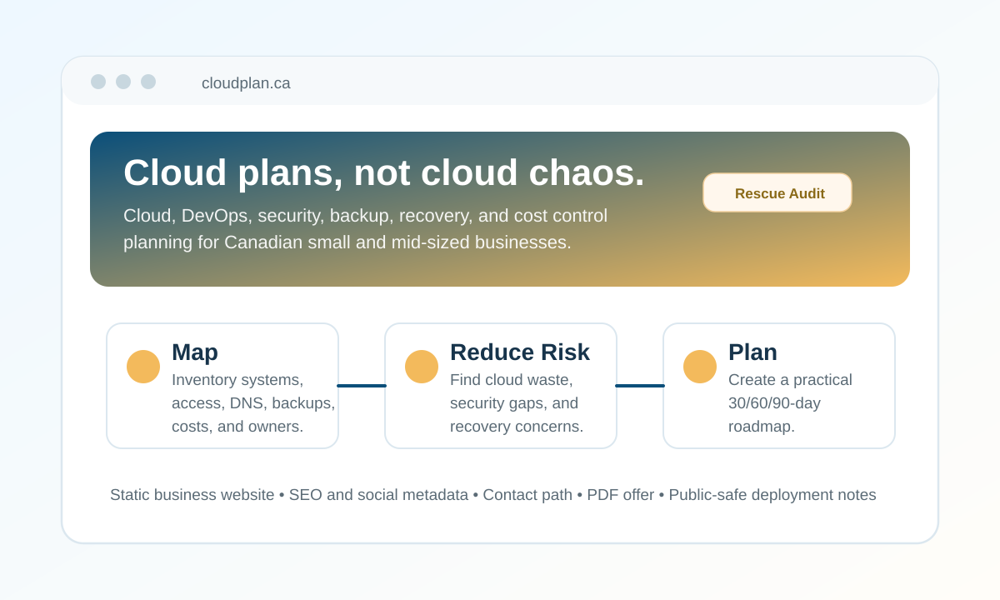

Portfolio Website Link
CloudPlan.ca
A static business website for cloud, DevOps, security, backup, recovery, and cloud planning services for Canadian small and mid-sized businesses.

Overview
What this link represents
CloudPlan.ca presents a practical consulting offer for businesses that have cloud services, websites, Microsoft 365, backups, GitHub, Docker, vendors, or deployments, but need a clearer plan for what exists, what is risky, and what to fix first.
The site is intentionally simple and reliable: a static landing page with supporting privacy, terms, security, contact, and thank-you pages, plus a downloadable overview for the Cloud Rescue Audit offer.
Scope
Website Highlights
- Homepage messaging focused on cloud planning, DevOps advisory, security baselines, cost control, backup, and recovery planning.
- Cloud Rescue Audit section with a plain-language final deliverable and 30/60/90-day roadmap positioning.
- Service cards for fractional DevOps leadership, monitoring and observability, Microsoft 365 and cloud security, and recovery planning.
- Static implementation suitable for simple web hosting, with no backend database dependency.
- Public-safe repo documentation that calls out safety rules around secrets, passwords, API tokens, private keys, and hosting credentials.
Employer Value
Why it belongs in the portfolio
- Shows the ability to turn technical cloud and DevOps experience into a focused business service offering.
- Demonstrates clear communication for non-technical business owners while still reflecting senior cloud, security, DevOps, and recovery depth.
- Connects consulting strategy, website execution, documentation, and operational safety into one real project.
Technical Notes
Static Delivery
Built for simple hosting with static HTML, CSS, and JavaScript so the site can run without database operations.
Service Design
The Cloud Rescue Audit gives the website a clear commercial entry point instead of being a generic consulting page.